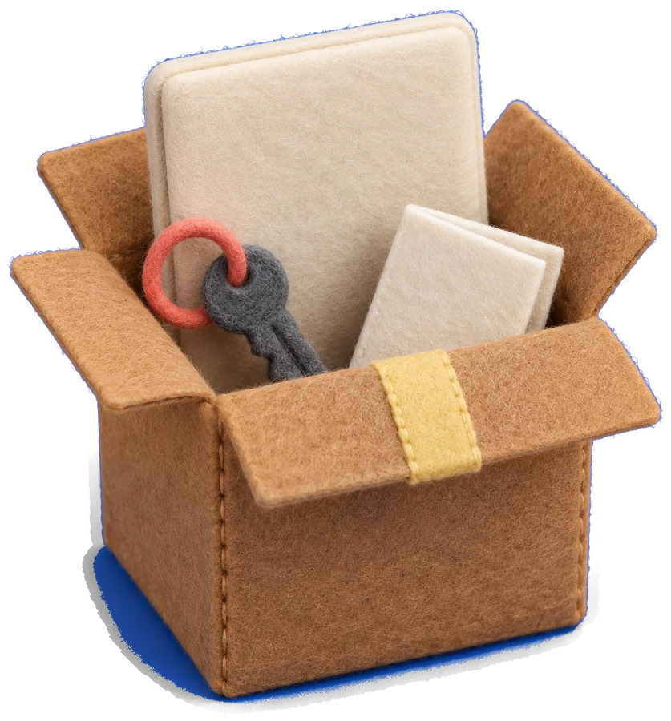

yuhobuilds / move
yuhobuilds / move새 컴퓨터로 이사,
내 PC에 맞는 목록으로
질문 3개 · Windows에서 Windows로
절대 두고 가면 안 되는 것부터 확인까지
synk.im/builds/move
01 / YUHOBUILDS TOOL실제 이사 기록

이사yuhobuilds / move질문 3개 · Windows에서 Windows로
절대 두고 가면 안 되는 것부터 확인까지

이사